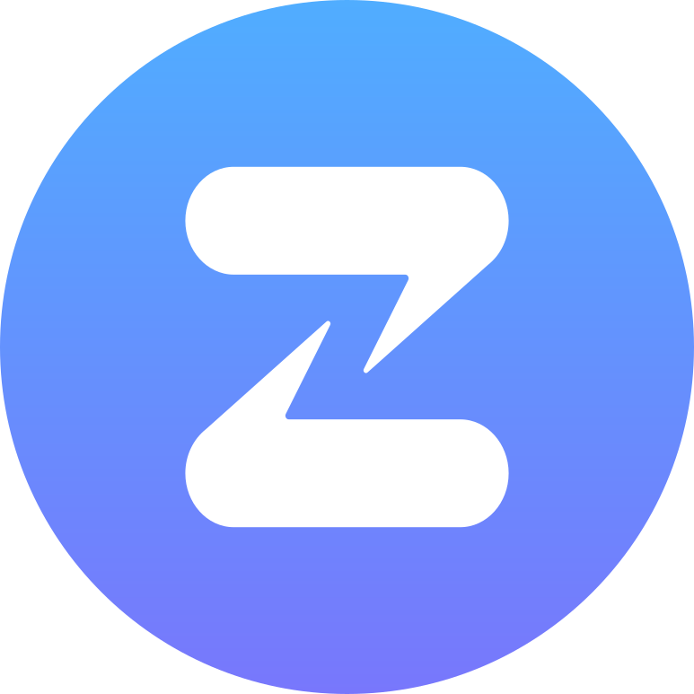

Google Summer of Code 2026 @Zulip
About Me
Hi! I'm Dhruv Shetty, a junior undergraduate at the Indian Institute of Technology Kanpur. My journey into programming started with my curiosity about how complex,yet beautiful technologies are built. I've always been fascinated by how the collective efforts of a community can bring these systems to life. This curiosity is what led me to open source.
Over the past few months, "Eat, Code, Sleep" has been my mantra as I started contributing to open source. Developing brings me genuine joy, and my experience in open source has been incredibly fulfilling. Outside of academics, I am a sportsperson, a weightlifter, and also like to play badminton.
General Information
- GitHub: DhruvShetty22
- Zulip Username: Dhruv Shetty
- LinkedIn: Dhruv Shetty
- Personal Email: dhruvshetty2203@gmail.com
- Institute: Indian Institute of Technology Kanpur
- College Email: sdhruv23@iitk.ac.in
- Phone No.: +91 7208520422
- Timezone: Indian Standard Time (GMT+05:30)
Why Zulip?
I discovered Zulip while exploring active open-source organizations to contribute to. During this process, I repeatedly came across Zulip being referenced in the README files of several projects, often highlighted as a platform where they discussed ideas and developed them. This initially drew my attention to the project. As I went through Zulip’s documentation and codebase. I really loved how structured and well-organized everything was. It made it very easy for me to understand the codebase and start contributing.
The code review process here is something which i loved the most here. I still remember my first pull request, which I initially thought was ready to be merged, had so much room for improvement that i almost ended up rewriting almost everything. The level of attention to detail and the emphasis on encouraging contributors to think and question their own decisions to improve their work is what taught me to write better code.
I am honestly very grateful to the maintainers for their time and support. Regardless of the outcome of this GSoC application, I intend to remain an active contributor and be a part of the Zulip community :)
Prior Experiences
While this is my first time contributing to Open Source, I bring practical experience from my role as a software development intern at imbesideyou (a Japanese AI startup) and from actively participating in several hackathons. You can also explore my various personal projects some part of course work while some being hackathon projects, on my GitHub profile: DhruvShetty22.
Post GSoC
I learned so much as part of my preparation for GSoC so I plan to continue contributing to Zulip even after the program ends completing the PRs that i opened and guide future contributors. Post GSoC, I also plan to work on a few more orgs other than Zulip to get more exposure. I love this community and would definitely be a part of it in the long run. Thank You :)
Note for Reviewers
This proposal is available as a website as well as a PDF. The website is more interactive and contains additional information, so I highly recommend reading the web version for the best experience.